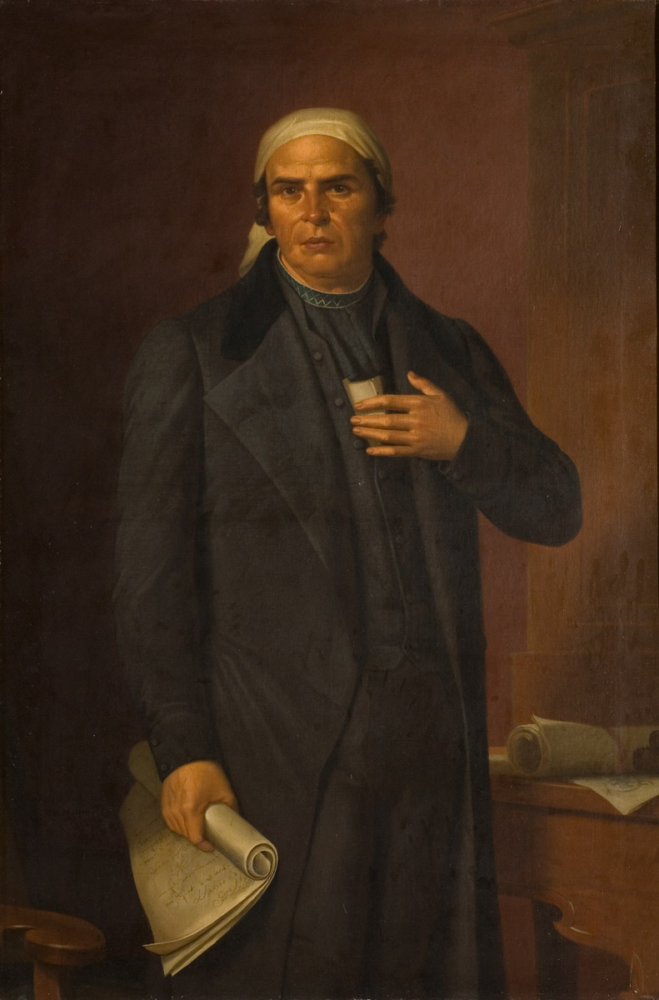

4.- Las guerrillas en la resistencia insurgente 
Tras la muerte de Morelos, los insurgentes se dispersaron porque
ya no contaban con un líder que reuniera ejércitos grandes, por
lo que grupos más pequeños se organizaron bajo diferentes liderazgos:
Guadalupe Victoria peleó en algunas partes del actual
estado de Veracruz, y Vicente Guerrero en el estado que hoy lleva
su nombre. El aislamiento de los insurgentes los obligó a usar
la guerra de guerrillas para combatir a los realistas y permitió la
supervivencia del movimiento insurgente hasta la consumación
de la Independencia.
La guerra de guerrillas era un conjunto de estrategias que
pretendía desorganizar al ejército realista; para ello, pequeños
grupos de insurgentes atacaban por sorpresa a los enemigos y
escapaban rápidamente tomando sus correspondencias, armas
y alimentos.
En 1817, procedentes de Europa, llegaron el capitán
español Francisco Javier Mina y el fraile novohispano
Servando Teresa de Mier, quien había estado exiliado
en Europa durante 10 años y divulgó las ideas
de independencia. Luego de desembarcar en el
puerto de Soto la Marina (hoy Tamaulipas), Javier
Mina, junto con más de 300 hombres, se
introdujo en la zona del Bajío con la intención
de dar un nuevo impulso a la lucha por la Independencia,
pero fue derrotado por tropas realistas.
Fue capturado y fusilado, mientras que
Teresa de Mier sería encarcelado en San Juan de
Ulúa, Veracruz.